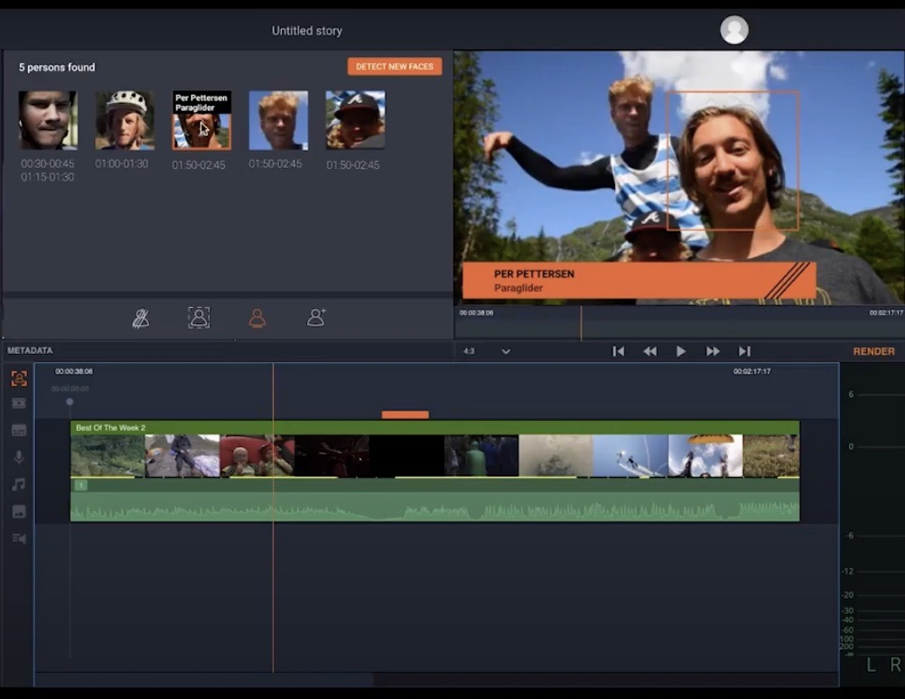

Portfolio
About
SYNNE GRINDHEIM
A Masters Student in Digital Design and Interactive Technologies
TIME-BASED METADATA IN VIMOND IO
TASK
Explore opportunities for automated analysis of video using machine learning or artificial intelligence with the opportunities that comes with Amazon Web Services Rekonigition for Vimond IO - a cloud-based video storytelling application.
OUR SOLUTION
Censoring is a time-consuming job for journalists and video editors today, so we decided to create a function for automatic face censoring. With our new feature, Vimond IO users will be able to select faces through computer vision and face detection, and easily blur the faces in the matter of seconds. This will save the users a lot of time, and hence, add a great deal of value. We have also added some other features that we found useful. Our design choices were mostly based on the design principles consistency, affordance and feedback.
DEVELOPING OUR IDEA
INSIGHT
When gathering insight we spoke with Vimond IO users at Tv2, and tried to learn more about their workflow. Which functionalities are they satisfied with? Which functionalities do they miss? What can be better? We also conducted interviews with the in-house team working at Vimond IO at Vimond. What are the most common feedback they get from Vimond IO users? How can we make sure that our research regarding time-based metadata results in the highest value information possible for Vimond?
GOOGLE DESIGN SPRINT
With the insight we had gathered we started a Google Design Sprint. The next following days, we spent time using different methods as ‘how might we’s', setting long-term goals, selecting target area, sketching and low-fidelity prototyping. With this, we had a prototype to test. With the feedback we got from testing, we continued with an iteration sprint where we created new and more specific questions, we mapped and created a storyboard. Now we were able to start making a high-fidelity prototype by using the prototyping tool Figma. With our prototype we had a finished product, and we were able to test and observe users, and get further ideas on improvement.
LINK TO PROTOTYPE
YouTube: Time-Based Metadata in Vimond IO

©2020 Synne Grindheim